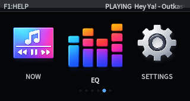
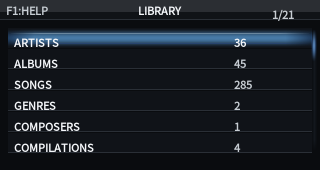
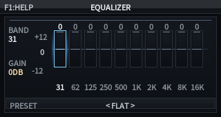

Graphical UI
GUI: Small-screen Product Interface
The GUI is LoFiBox Zero's first-class presentation target for Linux framebuffer and X11. It is designed for small displays such as 320x170 screens, with current state, search, playback, and queue readability as the priority.
Main Menu
The main menu opens Library, Search, Now Playing, Lyrics, EQ, Settings, and other product areas.

Library
The library view comes from the library index. It exposes track, album, and artist browsing while play and queue actions map back to runtime commands.

Search
Search is the unified entry point across local libraries and remote sources. Results are grouped by source; selecting one can play it immediately or add it to the queue.

Now Playing
Now Playing displays the current track, playback state, progress, spectrum, source, and lyrics summary from the runtime projection. Continue, pause, next, previous, and seek actions are controlled by the runtime.

Lyrics
The Lyrics page displays the runtime lyrics projection. Synchronized lyrics highlight the current line; plain text lyrics scroll as regular text. When lyrics are unavailable, the page shows source status and entry points for lookup, apply, and writeback.

EQ / DSP
The EQ page is the graphical projection of the DSP domain. The current implementation supports 10-band graphic EQ, enable/disable, reset, preset switching, and live updates.

Built-in EQ Presets
| Preset | Best for | Tendency |
|---|---|---|
| Flat | Default playback or calibration checks | All bands at zero, EQ disabled |
| Bass Boost | Headphones and small speakers with weak low end | Boosts 31/62/125Hz, slightly restrains highs |
| Treble Boost | Dark headphones and detail monitoring | Boosts 4k/8k/16kHz |
| Vocal | Vocals, podcasts, interviews | Improves intelligibility from 500Hz to 2kHz |
| Rock | Rock and live energy | Enhances lows and highs, slightly trims low mids |
| Pop | Pop music | Slightly lifts lows and highs while keeping mids clear |
| Jazz | Jazz, vocals, small ensembles | Warm low end and air |
| Classical | Classical and acoustic music | Slight lift from 1k to 8kHz |
| Electronic | Electronic and dance music | Stronger low end and highs |
| Podcast / Speech | Podcasts and spoken-word content | Reduces low-frequency noise and lifts speech bands |
GUI and Runtime Boundaries
- The GUI does not read credentials or display raw tokens/passwords.
- The GUI does not control the audio backend directly; it submits playback, queue, and EQ runtime commands.
- Closing the GUI is not stop; playback should continue unless the user explicitly sends stop.
- Search, metadata, lyrics, artwork, and other results must return to the unified product objects.